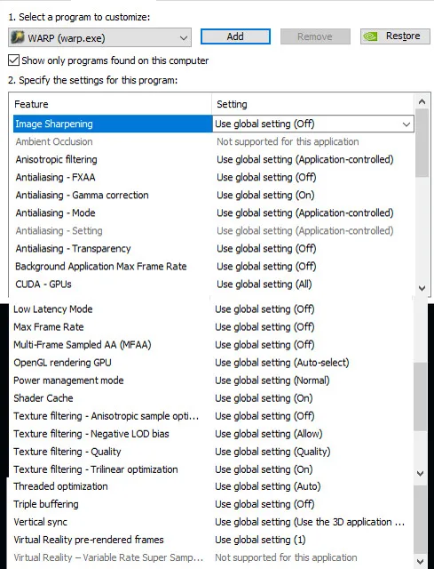
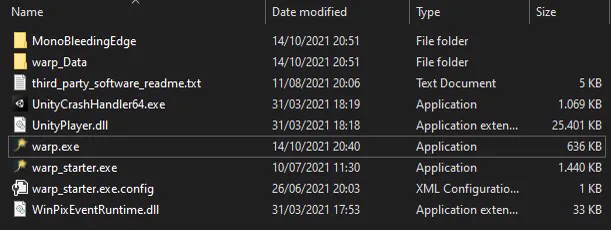

You are unsure how to follow these instructions? Your problem isn't here?
Just join our Discord, or write to sunija on Discord! ♥
“I cannot see WARP ingame!”
Ensure that you set the following option in GW2:
Options → Graphic Options → Resolution, select “Windowed Fullscreen”.
“I cannot see the WARP icon, but I can see WARP icons on the map.”
Start WARP in admin mode:
- Go to your WARP folder.
- Right-click warp.exe → Properties.
- Select Compatibility at the top.
- Check “Run this program as an administrator” at the bottom.
- Repeat steps 2–4 for warp_starter.exe!
Background: This happens if you start GW2 in admin mode. So, alternatively, you could also not start GW2 in admin mode.
“My screen is black!”
- Open NVIDIA Control Panel → 3D Settings → Manage 3D settings.
- Under the Program Settings tab in the main panel, select WARP in the dropdown.
- Make sure that all settings applied to WARP are the default, or as in the picture below.
- Apply the changes.
- Restart WARP.

“WARP isn’t downloaded correctly.”
- Make sure you didn’t install WARP in C:/Programs.
Rather use your download folder, or “C:\Users\[YOUR USERNAME]\Documents”. - If the patcher gets stuck, download WARP directly from
https://weltenrast.de/data/recore/WARP.zip
Unpack it, then start warp_starter.exe.
Please inform us on Discord, so we can go fix it.
“I've got another problem!”
- Make sure that your antivirus program didn't delete parts of WARP.
Your WARP folder should look like the picture below. - Tell us on Discord, or just write to sunija!
